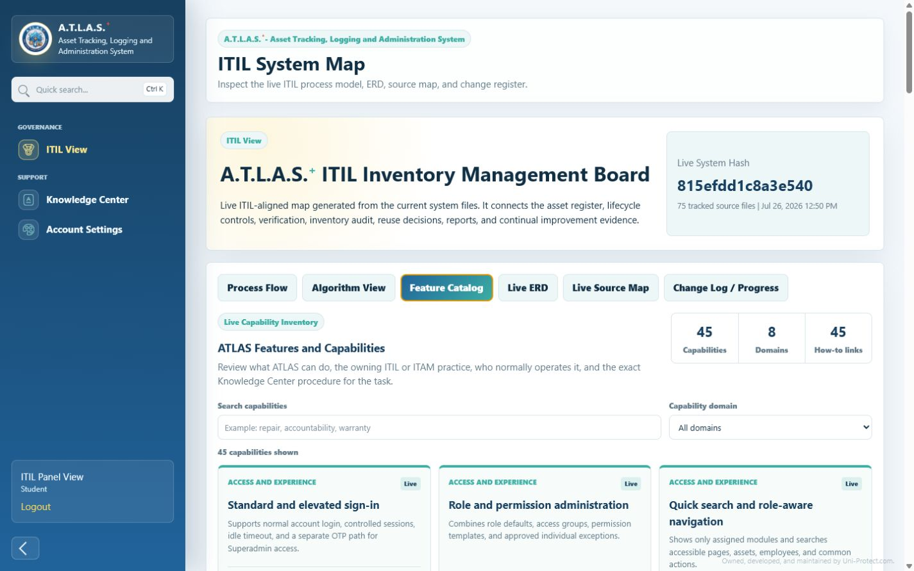
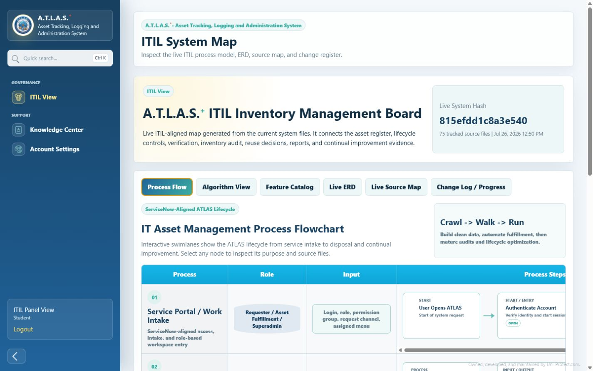
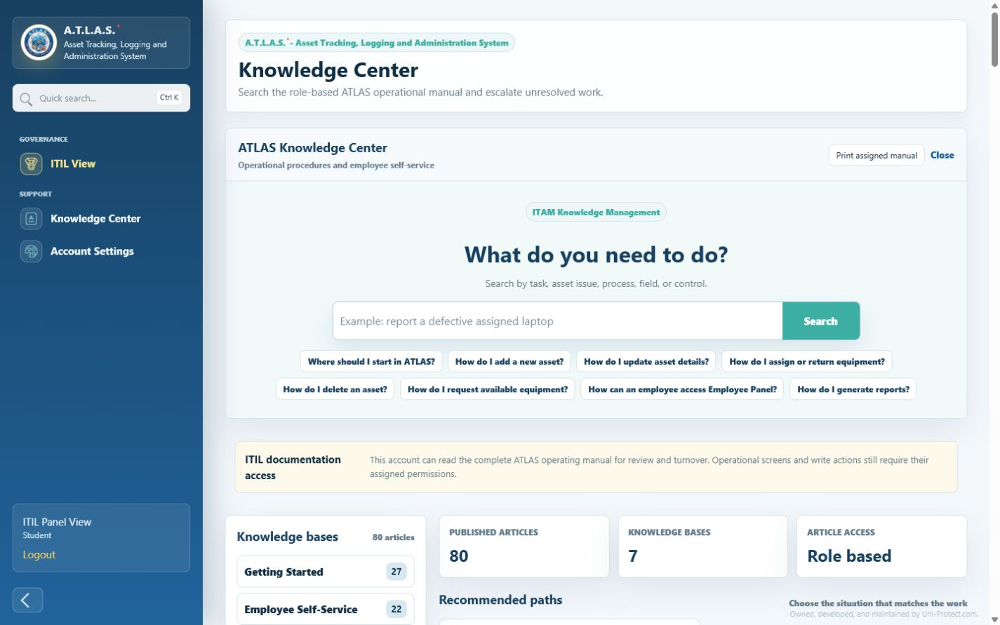

Asset Tracking, Logging and Administration System
A.T.L.A.S.+
One operational workspace for the complete technology asset lifecycle, from receiving and accountability to repair, reuse, reporting, and retirement.
- Hardware and software assets
- Employee self-service
- OTP-secured role access
One connected operating model
Know what you own. Know who has it. Know what happens next.
ATLAS connects inventory data with the work around it. Assignment changes custody. Repair updates lifecycle state. Consumable release adjusts stock. License deployment consumes a seat. OTP-secured access and one-device sessions keep each approved action attributable.
See the connected lifecycleBuilt for practical ITAM
Capabilities that move with the asset lifecycle
Operate physical assets, software entitlements, service events, employee requests, evidence, and controls from one consistent system.
01 / Hardware lifecycle
Control assets from receiving through retirement
Maintain a dependable asset register, request reusable equipment, assign and transfer custody, capture signed accountability, scan labels, and calculate live age and book value.
- Asset register and bulk XLSX import
- Assignment, transfer, return, and custody history
- QR and barcode labels
- Accountability evidence and employee asset details
02 / Service workflows
Turn a defective device report into controlled work
Employees report assigned units, handlers triage impact and ownership, and the public timeline follows repair, vendor, warranty, return, or closure outcomes.
- Employee defective-unit reporting
- Repair Desk triage and assignment
- Vendor, RMA, warranty, and maintenance linkage
- Requester email status notifications
03 / Software and stock
Track entitlements and the items people consume
Control software seats, expiry exposure, consumable quantities, request approval, release, printer allocations, and replenishment attention.
- License register and dedicated used-seat ownership view
- Seat capacity and duplicate-allocation safeguards
- Consumable request, approval, and release
- Low-stock and allocation history
04 / Governance
Make operating evidence part of everyday work
Use permission-scoped reporting, audit trails, live architecture views, warranty monitoring, controlled backup, and a maintained operational Knowledge Center.
- Dashboards, reports, and Action Center
- Audit, access templates, and backup controls
- Interactive process flow, focused live ERD, and progress register
- Searchable beneficiary manual and natural-voice assistance
From record to result
A lifecycle your team can actually follow
ATLAS applies ITIL and ITAM control points to the operational steps people perform every day.
- 01Receive and register
Create trusted identity, cost, ownership, condition, and warranty records.
- 02Request and approve
Route equipment and consumable demand through a visible decision state.
- 03Deploy and acknowledge
Assign custody, notify the employee, and retain signed accountability evidence.
- 04Support and restore
Triage defects, coordinate repair or warranty, and publish meaningful status updates.
- 05Verify and optimize
Monitor value, stock, entitlements, warranties, exceptions, reuse, and retirement.
Real product views
See the platform, the process, and the operating knowledge
These are live ATLAS screens captured from the local system, not conceptual mockups.


Designed around accountable service
ITIL-aligned. ITAM-focused. Built for operational turnover.
ATLAS connects Hardware Asset Management, Software Asset Management, Incident Management, Service Request Management, Knowledge Management, Change Enablement, Measurement and Reporting, and Service Validation practices.
ATLAS is an independent product and is not affiliated with or endorsed by ServiceNow. Practice alignment describes workflow design, not product equivalence or certification.
Ready to see ATLAS in your environment?